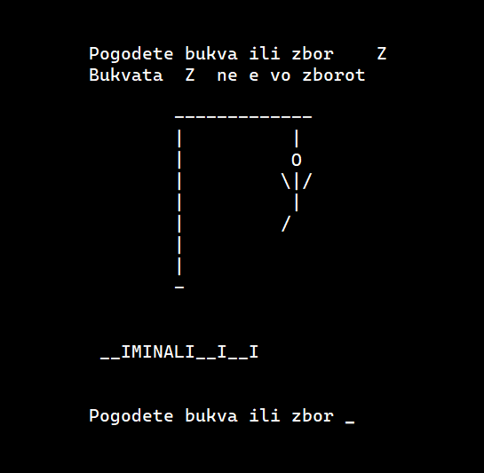

‹

Бесилка
Се одлучив да ја дигитализирам класичната игра „Бесилка“. Сега, корисникот може сам, т.е. со својот персонален компјутер да ја игра оваа игра, колку што сака пати. Овој проект го изработив во програмскиот јазик Python.